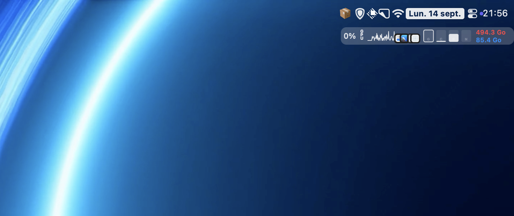
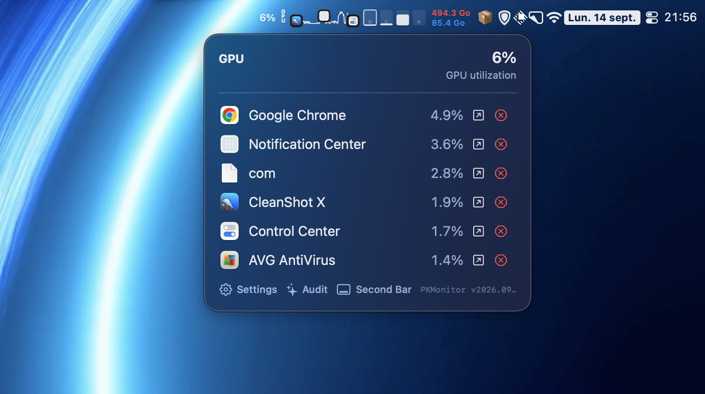

SPARKSparkline temps réel
Une trace continue rafraîchie jusqu’à 200 ms, avec les icônes des applications dominantes dessinées dans le graphe.
Trace · 200 msCPU 34 %
CPU, GPU, RAM, disque et réseau vivent dans votre barre des menus. Un survol suffit pour voir quelle application travaille, sans dashboard à ouvrir ni onglet à surveiller.
Version 2026.09.32 · dernière release GitHub
PKMonitor remplace le réflexe « ouvrir Activity Monitor » par une ligne discrète dans la barre des menus, réglable au pixel et silencieuse quand tout va bien.
Une trace continue rafraîchie jusqu’à 200 ms, avec les icônes des applications dominantes dessinées dans le graphe.
Couleur de base et couleur critique réglables pour chaque métrique : la teinte par défaut remplace le noir, la critique prend le relais au-delà de votre seuil.
Total en rouge, espace libre et disponible en bleu — une ou deux lignes, interlignage, position et taille réglables.
Cochez les icônes tierces à descendre, réordonnez-les, et le clic est transmis au menu d’origine de l’application. Tout est restauré au décochage ou à la fermeture.
Un clic sur le bouton IA du panneau détaillé analyse les processus gourmands : légitimité estimée d’après le nom, le bundle et le chemin, motifs des alertes, recommandations.
Survolez l’élément de la barre : métriques détaillées, arrêt de processus, boutons Audit et Settings, bascule immédiate entre barre des menus et seconde barre. Clic droit pour le menu complet.
Tableau de bord système en direct, sidebar par module, recherche, pages Help & Support et Project Library. Un onglet par réglage : sparkline, jauges, disque, panneau, icônes de la barre, conseiller IA.
Thème clair, sombre ou système, lancement à la connexion, et toggles d’affichage pour la sparkline, les jauges et le panneau. Aucune donnée ne quitte le Mac par défaut.
Settings › Menu Bar Items liste les icônes présentes dans votre barre. Cochez celles à déplacer : PKMonitor les redessine dans une seconde barre, dans l’ordre que vous fixez, et transmet chaque clic au menu d’origine de l’application.

1 2En haut, la barre des menus telle que macOS la dessine, avec ses icônes d’origine intactes. En dessous, le module PKMonitor basculé dans la seconde barre : valeur, libellé, sparkline, icônes des applications dominantes et jauges.
Ouvrez Settings › Menu Bar Items et cochez les icônes tierces à descendre dans la seconde barre.
Réordonnez la liste pour fixer l’ordre d’affichage, ajustez la taille si besoin, et gardez les clics fonctionnels.
Décochez une icône ou quittez PKMonitor : chaque application retrouve exactement sa position d’origine.
Les permissions Accessibilité (déplacer les icônes d’origine) et Enregistrement d’écran (redessiner les icônes descendues) ne sont demandées que pour cette fonctionnalité, et uniquement au moment où vous l’activez.
Un clic sur le bouton IA du panneau détaillé envoie les métriques et les applications concernées à votre endpoint compatible OpenAI. Rien ne part avant ce clic, et la clé API reste dans le Keychain.
| Processus | Empreinte | Légitimité | Motif & recommandation |
|---|

1 2 3 4Le panneau s’ouvre au survol du module : métrique active, valeur, processus classés par consommation, bouton d’arrêt, puis les accès Settings, Audit et Second Bar.
Activity Monitor reste la référence pour l’analyse en profondeur. PKMonitor occupe le créneau qu’il laisse vide : la réponse immédiate, sans quitter son travail.
| Situation | Activity Monitor | PKMonitor |
|---|---|---|
| Voir la charge d’un regard | Fenêtre à ouvrir, puis à retrouver | Module dans la barre des menus, visible en permanence |
| Savoir quelle application consomme | Liste triable en colonnes | Panneau au survol, apps dominantes dessinées dans la sparkline |
| Arrêter un processus | Bouton Arrêter, avec confirmation | Bouton d’arrêt directement dans le panneau de détail |
| Déplacer des icônes tierces | — | Seconde barre à la Bartender, clics transmis au menu d’origine |
| Interpréter les alertes | À votre charge | Conseiller IA optionnel : légitimité, motifs, recommandations |
| Disque et réseau | Onglets dédiés | Module disque deux lignes et débit ↓/↑ dans la barre |
Les deux peuvent cohabiter : PKMonitor ne remplace pas vos outils d’analyse, il supprime l’aller-retour.
PKMonitor est gratuit et open source. Choisissez le DMG glisser-déposer, Homebrew ou la commande curl — aucun compte, aucun redémarrage.
Version 2026.09.32 · macOS 13 ou ultérieur · Intel et Apple Silicon. Les boutons de téléchargement pointent automatiquement vers le dernier DMG publié sur GitHub Releases.
brew install --cask mondary/tap/pkmonitorbrew upgrade --cask pkmonitorcurl -L -o PKMonitor.dmg https://github.com/mondary/PKmonitor/releases/latest/download/PKMonitor-2026.09.32.dmgEt si la vôtre n’y est pas, la réponse est probablement déjà dans le dépôt GitHub ou dans le changelog.
Il le complète plutôt : PKMonitor répond en un regard aux questions du quotidien (quelle application consomme, combien de mémoire reste-t-il, le disque se remplit-il, le réseau travaille-t-il) et laisse l’analyse fine à Activity Monitor quand vous en avez besoin.
Par défaut non. Le conseiller IA est optionnel : aucune requête n’est envoyée avant une analyse explicite. Lors de cette analyse, seuls les métriques, noms, bundle identifiers et chemins des applications concernées sont transmis à l’endpoint compatible OpenAI que vous avez configuré — et votre clé API reste dans le Trousseau macOS.
Trois chemins : glisser-déposer depuis le DMG, brew install --cask mondary/tap/pkmonitor, ou la commande curl de la section installation. Aucun redémarrage n’est nécessaire.
Avec Homebrew : brew upgrade --cask pkmonitor. Sinon, téléchargez le DMG de la dernière release et remplacez l’application : vos réglages sont conservés.
Settings › Menu Bar Items : cochez les icônes à descendre, réordonnez-les, et PKMonitor les redessine dans la seconde barre. Un clic sur une icône descendue ouvre son menu d’origine, et tout est restauré au décochage ou à la fermeture de l’application.
Non. La surveillance s’appuie sur les API système natives avec un rafraîchissement raisonné : quelques points de CPU au repos, rien de perceptible en usage courant.
Oui, et c’est bienvenu : ouvrez une issue ou une pull request sur le dépôt GitHub. Vous pouvez aussi soutenir le projet sur Ko-fi.
Quelques secondes d’installation, et votre barre des menus raconte enfin ce qui se passe.
Version 2026.09.32 · Gratuit · Open source MIT · macOS 13+